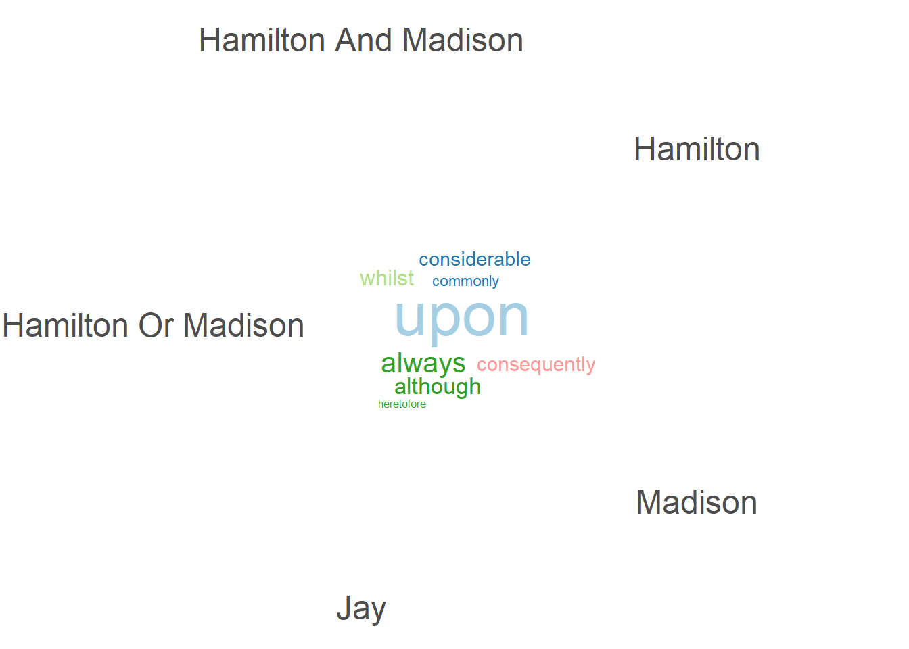

The multinomial language model is a probabilistic framework used to model the distribution of words in a document or collection of documents. It assumes that each word in a document is drawn independently from a fixed vocabulary according to a categorical distribution – i.e., in accordance with the Bag of Words approach, where each word has a certain probability of occurring. The model is multinomial in that it considers the counts of each word in a document, rather than just the presence or absence of words. Formally, for a document represented as a sequence of word counts, the likelihood of observing the document is given by the multinomial probability mass function (PMF), which combines the factorial of the total word count with the product of the probabilities of each word raised to the power of its observed count. This framework forms the basis for many text modeling techniques, including Naive Bayes classifiers and topic models (which we will explore more this week and next…), and provides a straightforward way to estimate the probability of unseen documents given observed word frequencies.
GRS (Ch. 6) uses a simplified three-word vocabulary
(cat, dog, fish) and each document only contains a single
token (i.e., instance of a type). We are going to retains a similar
structure, but add another word to our vocabulary:
hamburger = (1, 0, 0, 0)
salad = (0, 1, 0, 0)
taco = (0, 0, 1, 0)
nuggets = (0, 0, 0, 1)
Recall that this approach accords with the Bag of Words, where words are drawn individually and independently from a categorical distribution, where \(W_i = \mu\) – where \(\mu\) is a vector containing the probability of each individual type. For this example, lets say \(\mu =\) (0.3, 0.25, 0.15, 0.3). Meaning that the probability of each token type being drawn for any trial is:
\(p\)(hamburger) =
0.3
\(p\)(salad) =
0.25
\(p\)(taco) =
0.15
\(p\)(nuggets) =
0.3
In other words, each word in the document is generated by
independently sampling from these four categories according to their
respective probabilities. Let’s assume we were interested in the
probability of drawing the document (hamburger,
hamburger, taco, nuggets). The
resulting count vector would be (2, 0, 1, 1) – representing 2 instances
of hamburger, 0 instances of salad, and 1
instance of both taco and nuggets.
Recall that the probability mass function for a categorical distribution is:
\[ p(\mathbf{W}_i \mid \boldsymbol{\mu}) = \prod_{j=1}^J \mu_j^{w_{ij}} \]
which we can generalize for documents that are longer than one word using the multinomial distribution, where \(\mathbf{M}\) is an integer that controls the number of tokens (i.e., length of the document):
\[ p(\mathbf{W}_i \mid \boldsymbol{\mu}) = \frac{M!}{\prod_{j=1}^J W_{ij}!} \prod_{j=1}^J \mu_{j}^{\mathbf{W}_{ij}} \]
Supplementing our values for the hypothetical document
(hamburger, hamburger, taco,
nuggets), we get:
\[ p(\texttt{H,H,T,N} \mid \mu) = \frac{4!}{(2_{H}!)(0_{S}!)(1_{T}!)(1_{N}!)} (0.3_H)^2 (0.25_S)^0 (0.15_T)^1 (0.3_N)^1 \]
\[ = \frac{4!}{2!\cdot0!\cdot1!\cdot1!}\quad 0.09 \cdot 1 \cdot 0.15 \cdot 0.3 \]
\[ = 12 \cdot 0.00406 \\ \] \[ p(H,H,T,N \mid \mu) \approx 0.0486 \]
As GRS (Ch.6) also note, the advantage of specifying a probability model is it accompanies a set of known results that are a consequence of the modeling assumptions – e.g., expectation, variance, and covariance.
\[
\text{Expected Number of Times Word } j \text{ appears in Document } i
\] \[
E[\mathbf{W_{ij}}] = M_i\mu_j
\]
\[
\text{Variance of the count of word } j \text{ in Document } i
\]
\[
\text{Var}(\mathbf{W}_{ij{}}) = M_i\mu_j(1-\mu_j)
\]
\[
\text{Covariance of the count of word } j \text{ given word } k \text{
in Document } i; j \neq k
\] \[
\text{Cov}(\mathbf{W}_ij, \mathbf{W}_ik) = -M_i\mu_u\mu_j
\]
Putting it all together…
mu <- c(hamburger = 0.3,
salad = 0.25,
taco = 0.15,
nuggets = 0.3) # Mu (Probs)
M <- 4 # Document length (number of tokens)
expectation_wij <- M * mu # i.e., If I repeatedly generated documents of length M from mu, this is the average number of times each word would appear.
expectation_wij## hamburger salad taco nuggets
## 1.2 1.0 0.6 1.2variance_wij <- M * mu * (1 - mu) # i.e., How much the count of each word bounces around from document to document -- Does it show up a lot (1), never (0), or 50/50 (0.5)?
variance_wij## hamburger salad taco nuggets
## 0.84 0.75 0.51 0.84covariance_wij <- -M * (mu %o% mu) # i.e., How much is the variance of one word related to another? We use off-diagonal elements -- how counts of *different* words move together (all sum to M!)
diag(covariance_wij) <- variance_wij # Note: outer-product for off-diagonal gives us wrong values for diagonal (M * mu_j * mu_k) -- so we replace with true variance for W_ij
covariance_wij## hamburger salad taco nuggets
## hamburger 0.84 -0.30 -0.18 -0.36
## salad -0.30 0.75 -0.15 -0.30
## taco -0.18 -0.15 0.51 -0.18
## nuggets -0.36 -0.30 -0.18 0.84GSR (Ch.6) provide an illustrative example from Mosteller and Wallace (1963) concerning the disputed authorship of 12 Federalist Papers – a collection of 85 essays authored by Alexander Hamilton, James Madison, and John Jay between October 1787 and August 1788 advocating for the ratification of the U.S. Constitution. Since each Paper was authored using the same collective pseudonym – Publius – authorship was disputed. Or, at least, debate was surely had concerning which of the three – Hamilton, Madison, or Jay – was a particular Paper’s author. Some were later discovred to have been authored jointly. However, by the mid-20th century, it was believed that Jay authored (5), Hamilton authored at least (43), and Madison authored (14).
Mosteller and Wallace (1963) were able to use basic notions from the Bag of Words and multinomial language models to infer authorship for those disputed papers given variance in the writing styles of each known author. In essence, given variance in the writing styles of Hamilton, Madison, and Jay, we can infer authorship of those without attribution.
The code below is courtesy of Dr. Joseph Ornstein (UGA)
library(rvest)
page <- read_html('https://www.gutenberg.org/cache/epub/18/pg18-images.html') # Recover HTML of Project Gutenberg Site
chapters <- html_elements(page, '.chapter') # Recover Chapter Elements
text <- html_text2(chapters) # Convert Chapter to Text
federalist <- tibble(text) %>%
filter(!str_detect(text, 'slightly different version')) %>%
mutate(
author = str_extract(text, 'HAMILTON AND MADISON|HAMILTON OR MADISON|HAMILTON|MADISON|JAY') %>%
str_to_title(),
title = str_extract(text, 'No\\. [A-Z].*')
)
federalist_corpus <- quanteda::corpus(federalist, text_field = "text")
# 3. Tokenize and create DFM
federalist_tokens <- quanteda::tokens(federalist_corpus)
federalist_dfm <- dfm(federalist_tokens) %>%
dfm_trim(min_termfreq = 2)
interesting_words <- c('although', 'always',
'commonly', 'consequently',
'considerable', 'heretofore',
'upon', 'whilst') # Filter to Interesting Words
federalist_dfm <- dfm_select(federalist_dfm, pattern = interesting_words)
# 5. Group by author
federalist_author_dfm <- dfm_group(federalist_dfm, groups = federalist$author)
# 6. View top words per author (optional)
top_words_author <- quanteda.textstats::textstat_frequency(federalist_author_dfm, n = 15)
top_words_author## feature frequency rank docfreq group
## 1 upon 387 1 5 all
## 2 always 84 2 5 all
## 3 considerable 59 3 5 all
## 4 consequently 29 4 4 all
## 5 commonly 26 5 4 all
## 6 whilst 24 6 4 all
## 7 although 17 7 4 all
## 8 heretofore 15 8 3 all# 7. Comparison wordcloud (only filtered words)
quanteda.textplots::textplot_wordcloud(federalist_author_dfm,
comparison = TRUE,
max_words = 100,
color = c("blue", "red", "green", "orange"))